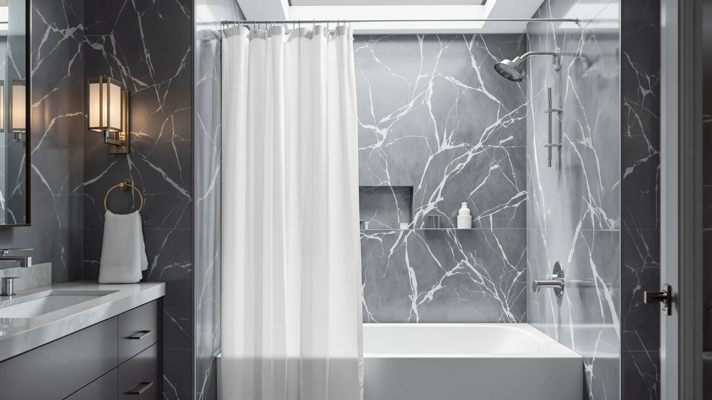

Magnetic vs Weighted Shower Curtain (2026)
Prices and picks verified as of July 2026. Independent, reader-supported reviews.


Things to Know Before You Buy
- Magnetic shower curtains only pull tight against metal tubs like steel or cast iron; they won't grip fiberglass, acrylic, or a tiled shower stall.
- Weighted shower curtains use added mass instead of magnetism, so they work in any tub or shower stall regardless of material.
- Clip-on weights and magnetic strips both retrofit a curtain you already own for less than $10.
- Heavyweight fabric curtains, like waffle weave cotton, resist billowing on their own without any added hardware.
- Magnets can lose their pull or develop rust spots in a humid bathroom, so check for a rust-resistant coating before you buy.
The magnetic vs weighted shower curtain question comes down to two different physics tricks for solving the same problem. Both methods fight the same annoying issue: cold air pulling the curtain into the shower and wrapping it around your legs mid-rinse. Magnetic curtains use small magnets sewn into the bottom hem that snap toward a metal tub or a matching strip on the wall. Weighted curtains use added mass, either sewn-in beads or clip-on weights, to hold the bottom edge down through gravity.
Neither option requires you to replace your whole shower setup. You can retrofit an existing curtain with magnetic clips or rubber weights in about ten minutes, or buy a curtain that already has the mechanism built in. The right pick depends on your tub material, your budget, and how much billowing bothers you. We break down the tradeoffs below so you can match the fix to your bathroom instead of guessing.
Quick Answer
Weighted shower curtains win for most bathrooms because gravity works regardless of tub material and a set of clip-on weights costs less than $10. Magnetic shower curtains pull ahead specifically in steel or cast iron tubs, where the magnetic pull holds the hem flatter than weight alone and leaves no gap at the bottom edge. If you don't know what your tub is made of, start with weighted since it works everywhere.
What is Magnetic?
A magnetic shower curtain uses small magnets sewn into the bottom hem, spaced every few inches along the width. When you hang the curtain over a steel or cast iron tub, the magnets pull toward the metal and hold the fabric flat against the wall instead of letting it swing into the shower stream. Some versions pair the curtain with a magnetic strip you attach to a fiberglass or acrylic tub, giving the magnets something to grip when the tub itself isn't metal.
The mechanism only works with curtains that hang close enough to the tub wall to make contact. A thick or heavily textured fabric can hold the magnets too far from the surface to connect, so most magnetic curtains use lightweight PEVA, vinyl, or a thin polyester weave. In the magnetic vs weighted shower curtain comparison, this is the tradeoff up front: magnetic curtains grip harder when conditions are right, but they need a specific tub material and a curtain thin enough to reach it. Rust is the other honest drawback. Cheap magnets in humid air can corrode within a year or two, which weakens the pull and can leave faint marks on the tub enamel if you don't wipe them dry.
What is Weighted Shower Curtain?
A weighted shower curtain holds its bottom edge down through mass instead of magnetism. Manufacturers build this in two ways: sewing small plastic or metal beads into the hem during production, or leaving the hem open so you can slide in clip-on weights after purchase. Heavier fabrics, like 200-plus GSM waffle weave cotton or hotel-grade polyester, add a third option that skips separate weights entirely and relies on the fabric's own density to resist billowing.
Because gravity doesn't care what your tub is made of, weighted curtains work the same in a steel tub, a fiberglass shower pan, or a tiled walk-in stall. That universality is the main reason you'll want weighted when you're comparing magnetic vs weighted shower curtain options for a rental or a bathroom with an acrylic surround. The tradeoff shows up at the edges: weight alone doesn't create the same flush seal a magnet does against a metal wall, so a weighted curtain can still flutter a few inches at the bottom corners in a strong draft. Clip-on weights also add a small amount of bulk that shows through thin, translucent curtains.
Head-to-Head: Build Quality & Durability
Durability splits along different failure points. Magnetic curtains fail when the magnets corrode or lose strength, which happens faster in bathrooms with poor ventilation or hard water buildup on the tub surface. Once a magnet weakens, the hem section around it stops gripping even though the rest of the curtain looks fine, so you end up with a curtain that holds unevenly instead of failing all at once. Cheaper magnetic curtains use uncoated metal magnets that can leave small rust flecks on a white enamel tub after a year of daily use.
Weighted curtains fail more predictably. Sewn-in beads occasionally work loose from the hem stitching after repeated washing, and clip-on weights can crack if you drop them or run them through a dryer. Neither failure mode damages the tub, and both are easy to spot and replace since the weights sit outside the fabric rather than embedded in a magnet housing. Heavy fabric curtains age the best of the three approaches: waffle weave cotton and dense polyester hold their shape and weight through years of machine washing, with fraying at the grommets the only real wear point. Comparing magnetic vs weighted shower curtain builds side by side, weighted options generally last longer with less visible tub damage.
Head-to-Head: Price & Value
Magnetic curtains and weighted curtains land in a similar price range at the low end. A basic magnetic PEVA curtain runs $10 to $15, and a set of clip-on weights to retrofit an existing curtain costs $6 to $13. Where the categories diverge is at the premium tier. Heavyweight fabric curtains built for natural weight, like a 256 GSM waffle weave, run closer to $25 to $35 because you're paying for denser cotton or polyester rather than a few ounces of plastic hardware. Magnetic strips that attach to a non-metal tub add another $5 to $10 on top of the curtain itself.
For pure value, add-on weights beat a built-in magnetic curtain: you keep the curtain you already own and spend under $10 to fix the billowing. Magnetic only pays off if you're replacing an old curtain anyway and happen to have a metal tub.
Head-to-Head: Use Experience
Day to day, the two options feel different in ways that matter more than the spec sheet suggests. Magnetic curtains snap audibly into place against a metal tub, and that same magnetic pull can make a faint clinking sound if the curtain sways while you shower. Getting in and out feels secure because the hem locks flat the moment it's near the wall, with no gap for cold air to sneak through. Weighted curtains move more quietly since there's no metal-on-metal contact, but the hem takes a beat longer to settle after you brush past it, and a strong exhaust fan or a draft from an open door can still lift a lightweight weighted curtain slightly at the edges.
Washing is where weighted curtains have an edge. Fabric with built-in weight goes straight into the washing machine like any towel. Clip-on weights need to come off before a wash cycle, or you risk cracking the plastic housing or denting the drum. Magnetic curtains also need the magnets removed or the whole curtain hand-washed, since tumbling magnets against a metal washer drum scratches both.
When to Choose Magnetic
Pick a magnetic shower curtain if you have a steel or cast iron tub and want the flattest possible seal against the wall. The stronger hold matters most in a small bathroom where a billowing curtain brushes against you with each shower, or in a house with kids who tend to shove the curtain aside carelessly. Magnetic works well if you're already replacing your curtain, since one with magnets built in costs about the same as a standard curtain without them. Skip this route if your tub is fiberglass, acrylic, or you shower in a stall with no metal surface nearby, since the magnets will have nothing to grip and the curtain will billow exactly like a standard one.
When to Choose Weighted Shower Curtain
Pick a weighted shower curtain if your tub is fiberglass, acrylic, or you use a tiled walk-in stall, since gravity works no matter what surface surrounds it. Weighted is also the better call for renters or anyone who wants to fix a billowing curtain without buying a new one. A $9 set of clip-on weights solves the problem in minutes. Choose a heavyweight fabric curtain specifically if you want to skip separate hardware entirely and don't mind paying more upfront for cotton or polyester dense enough to hang straight on its own. Weighted is the safer default whenever you're unsure which category fits your bathroom, since it works across tub materials where magnetic depends on having metal to grip.
Our Top Picks
These three picks cover both approaches, whether you want a curtain with magnets built in for a metal tub or an inexpensive way to add weight to the curtain you already own.

Editor's Pick
AmazerBath Frosted Shower Curtain Plastic
A frosted, privacy-friendly curtain with magnets built into the bottom corners, so it self-seals against a metal tub without extra hardware.
$11.99
Check Price on Amazon
Best Value
8 Pack Shower Curtain Weights
Eight clip-on weights that snap onto almost any curtain hem, the cheapest fix for a curtain that billows no matter what your tub is made of.
$9.99
Check Price on Amazon
Premium Choice
EMLTHORY 3 Sets Shower Curtain
Three sets of weighted clips in one pack, enough to outfit a main curtain and a liner or keep spares on hand after a wash cycle.
$5.99
Check Price on AmazonFrequently Asked Questions
Do magnetic shower curtain weights work on every tub?
No. Magnetic weights only grip ferrous metal surfaces like steel or cast iron. Fiberglass, acrylic, and tiled shower stalls give the magnet nothing to pull toward, so a weighted or heavyweight fabric curtain works better there.
Can I add weights to a curtain I already own?
Yes. Clip-on plastic or rubber weights slide onto the bottom hem of most standard curtains in a few minutes, and a full set costs less than $10.
Do magnetic curtains rust over time?
Cheap, uncoated magnets can develop rust spots after a year or two in a humid bathroom. Look for magnets described as rust-resistant or rubber-coated, and wipe them dry after each shower to extend their life.
Are weighted shower curtains machine washable?
Curtains with sewn-in weights usually go straight into the washing machine on a gentle cycle. Remove clip-on weights first, since tumbling them against the washer drum can crack the plastic or dent the drum.
Which option keeps cold air out better, magnetic or weighted?
Magnetic wins on a metal tub because the hem seals flat against the wall with no gap. Weighted curtains hold well too, but a strong draft can lift a lightweight weighted curtain slightly at the corners.
Final Verdict
The magnetic vs weighted shower curtain decision comes down to your tub. Choose magnetic, like the AmazerBath frosted curtain with built-in magnets, if you have a steel or cast iron tub and want the flattest seal. Choose weighted, whether that's clip-on weights or a heavyweight fabric curtain, if your tub is fiberglass, acrylic, or you're not sure what it's made of, since gravity works everywhere magnetism can't reach.